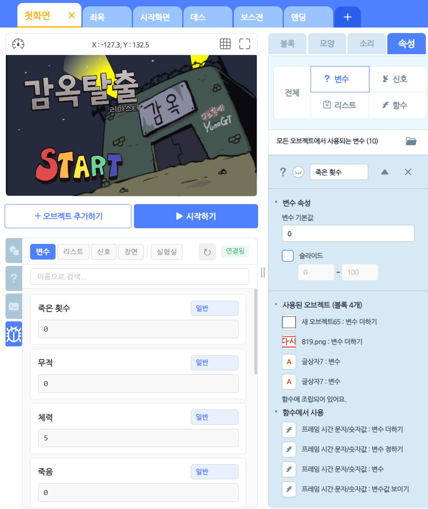
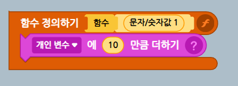
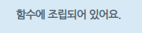
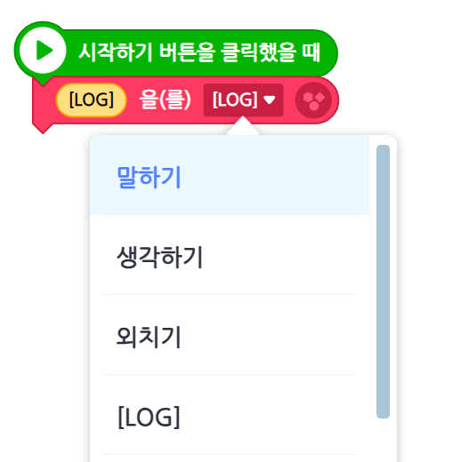
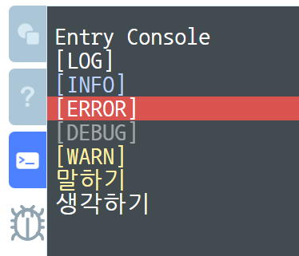
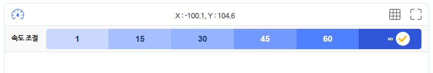
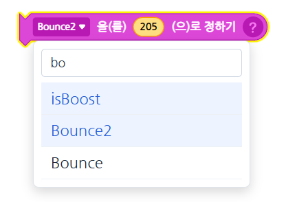
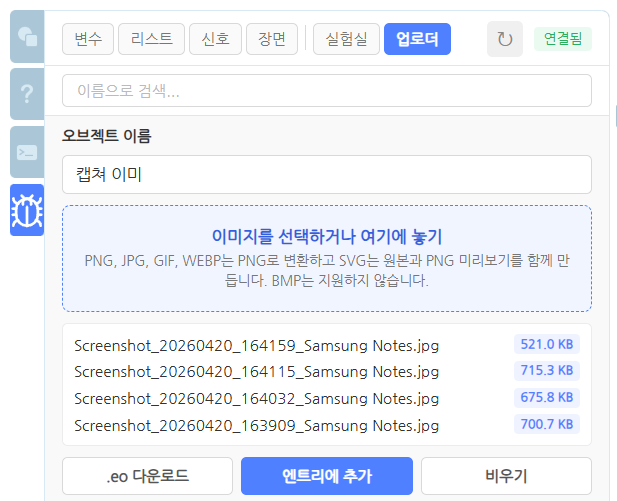
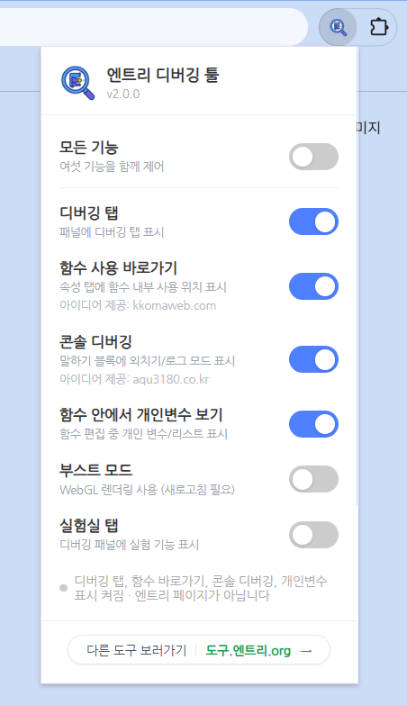

엔트리 만들기 화면에 디버깅 탭을 더합니다. 변수와 리스트를 실시간으로 보고 수정하고, 신호와 장면을 바로 테스트하며, 함수 안에서 사용된 자료가 어디에 있는지까지 한 화면에서 찾아 보세요.

변수와 리스트가 십수 개로 늘어나고, 신호와 장면이 얽히기 시작하면 한 가지 값을 확인하려고 작품을 멈췄다 다시 시작하기를 반복하게 됩니다. Entry Debugger는 그 반복을 줄이려고 만든 도구예요.
엔트리 만들기 화면을 떠나지 않고 현재 상태를 확인하고, 필요한 테스트를 바로 실행할 수 있게 도와줘요.
변수, 리스트, 신호, 장면을 하나의 패널에 모았어요. 값 확인은 물론, 직접 수정하고 신호를 즉시 발생시키며 장면을 바로 전환해 볼 수 있어요.
속성 탭에 함수에서 사용 섹션을 추가해, 어떤 함수의 어떤 블록에서 쓰였는지 보여줘요. 클릭하면 해당 함수 편집 화면으로 이동하고, 가능하면 그 블록까지 선택돼요.
말하기 / N초간 말하기 블록에 외치기와 [LOG] [INFO] [WARN] [ERROR] [DEBUG] 옵션이 더해져요. 로그 옵션은 말풍선 대신 콘솔에 메시지를 기록합니다.
함수 편집 중에도 현재 오브젝트의 개인 변수와 리스트가 드롭다운에 보이도록 보조해요. 프로젝트 JSON은 바꾸지 않고, 선택 UI만 거들어 줍니다.

아래는 실제 디버깅 탭이 동작하는 방식을 그대로 옮긴 인터랙티브 미리보기예요. 탭을 바꾸고, 검색하고, 값을 수정하고, 신호를 보내 보세요. 오른쪽의 변경이 왼쪽 미리보기에 곧바로 반영됩니다.
현재 값 표시 · 직접 수정 · 검색 · 스코프(일반/공유/실시간/지역)별 표시
항목 펼치기/접기 · 추가/수정/삭제 · 스코프 변경 보조
등록된 신호 목록 · 검색 · 보내기 버튼으로 즉시 발생
장면 목록 · 검색 · 선택 장면으로 이동 · 실행 중 전환 테스트
엔트리 기본 속성 탭은 자료가 함수에 쓰였다는 사실까지만 알려줘요. Entry Debugger는 그 아래에 어떤 함수의 어떤 블록에서 쓰였는지 목록을 더해, 클릭 한 번으로 해당 위치까지 이동해 줍니다.

어느 함수의 어느 블록에서 쓰였는지는 알 수 없어, 직접 함수들을 하나씩 열어 봐야 해요.
속성 탭 기존 표시 바로 아래에 함수에서 사용 목록이 추가돼요. 함수 이름과 사용된 블록 정보가 함께 표시되고, 클릭하면 해당 함수 편집 화면으로 이동합니다.
아이디어 제공 · kkomaweb.com
말하기와 N초간 말하기 블록의 드롭다운에 옵션을 더했어요. 외치기를 고르면 엔트리에 이미 있는 별 모양 말풍선이 뜨고, [LOG] / [INFO] / [WARN] / [ERROR] / [DEBUG] 를 고르면 말풍선 대신 콘솔에 기록됩니다.

✱ 기존 프로젝트 JSON을 자동으로 바꾸지 않아요. 로그 옵션은 실행 중에만 동작하는 보조 기능입니다.
아이디어 제공 · aqu3180.co.kr

엔트리 화면 안의 콘솔 패널에 레벨별로 색상이 입혀져 출력됩니다. 말하기 / 생각하기로 표시한 메시지도 같은 콘솔에 함께 흘러요.
기본은 꺼져 있어요. 필요할 때만 켜고, 프로젝트에 맞게 골라 쓰세요. 깊이 들어갈수록 엔트리 내부 동작을 빌려 쓰기 때문에, 업데이트에 따라 동작이 달라질 수 있어요.
엔트리 기본 변수인 초시계와 대답의 현재 값을 보고 직접 수정하고, 보이기 / 숨기기까지 제어할 수 있어요.
속도 조절 패널에 ∞ 단계가 추가돼요. FPS는 60으로 유지하면서 Entry.isTurbo 가 켜집니다. 켜져 있는 동안 속도 버튼이 깜빡여 상태를 알려줘요.

변수 / 리스트 / 신호 드롭다운에 검색 UI가 더해져요. 키워드 입력, 방향키 이동, Enter 선택, Esc 닫기까지 모두 키보드로.

여러 이미지를 한 번에 선택하거나 드래그해 떨어뜨려요. 오브젝트 이름을 정하면 .eo 파일로 받거나 엔트리에 바로 추가됩니다.

부스트 모드는 실험실이 아니라 확장 팝업의 별도 기능이에요. 내부적으로 엔트리의 WebGL 렌더링 옵션 (Entry.options.useWebGL) 을 켜는 일을 합니다.
확장 팝업에서 각 기능을 개별로 켜고 끌 수 있어요. 가장 위의 마스터 토글을 끄면 전체 기능이 한 번에 꺼집니다. 설정은 storage에 저장돼요.

Entry Debugger는 엔트리 공식 서비스가 아닌 개인 개발 도구예요. 어디서 동작하는지, 무엇을 바꾸고 무엇을 바꾸지 않는지를 미리 알려 드립니다.
처음 받는 질문 여섯 개를 모았어요.
https://playentry.org/ws/* 형태의 엔트리 만들기 화면에서만 동작합니다. 작품 공유 페이지, 메인 페이지, 다른 사이트에서는 동작하지 않아요.
기능별 켜기 / 끄기 설정을 저장하기 위해 storage 권한 하나만 사용해요. 외부 통신이나 다른 탭 접근 권한은 요구하지 않습니다.
아니요. WebGL 렌더링 옵션은 Entry 초기화 시점에 반영되기 때문에, 토글을 켠 뒤 새로고침이 필요해요.
아닙니다. 실험실 탭과 그 안의 모든 기능은 기본적으로 꺼져 있고, 사용자가 팝업에서 직접 켜야 동작해요.
확장은 기존 프로젝트 JSON을 자동으로 변환하지 않아요. 로그 옵션은 작품이 실행되는 동안 콘솔 출력만 보조하는 기능입니다. 저장하면 옵션은 일반 말풍선처럼 그대로 보존돼요.
블록은 변수 / 리스트의 ID를 참조하므로 실행 자체는 가능해요. 다만 함수 안에서 개인 변수를 선택하는 UI 보조는 확장이 켜져 있을 때만 제공돼요.
아이디어를 나눠 주신 분들 덕에 두 가지 기능이 시작됐어요.
도서 · 확장 블록 · 강연 · 자문으로 엔트리 곁에 있어 온 사람입니다. 학생이 막히는 곳에 정확한 한 문장을 두는 것 — 그 마음으로 이 확장도 만들었어요.